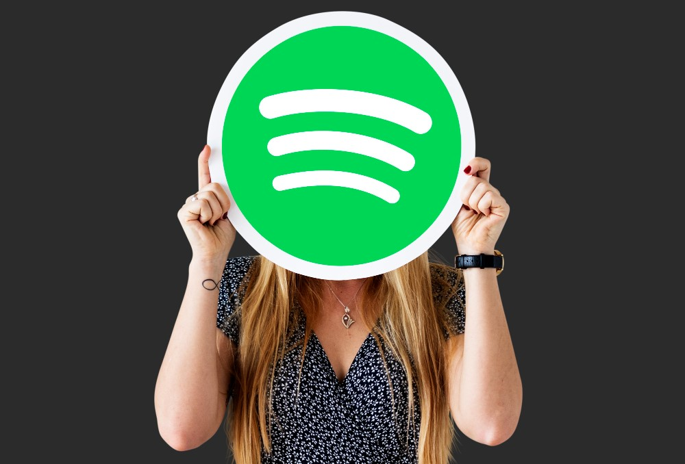

Spotify has revolutionized the way we listen to music, offering millions of songs, podcasts, and playlists at our fingertips. Whether you’re a casual listener or a music enthusiast, Spotify apk has something for everyone. But if you’re looking to take your Spotify experience to the next level, you’ll want to consider upgrading to Spotify Premium. And while you’re at it, why not connect with friends to share your favorite tunes? In this article, we’ll walk you through how to get Spotify Premium and how to find friends on Spotify—all in a straightforward, easy-to-understand, and slightly humorous way. Let’s dive in!
Spotify Premium is like the VIP pass to the music world. It removes ads, lets you download songs for offline listening, and gives you full control over your music experience. Here’s how you can get it:
Before we get into the “how,” let’s talk about the “why.” Spotify Premium offers some fantastic benefits:
If these features sound like music to your ears (pun intended), then Premium is definitely worth it.
Spotify offers several Premium plans to suit different needs:
Pick the plan that best fits your lifestyle.
Getting Spotify Premium is as easy as pie. Here’s how:
Pro Tip: Spotify often offers free trials for Premium, so keep an eye out for those. It’s a great way to test the waters before committing.
Now that you’re a Premium member, explore all the features. Create playlists, discover new music, and enjoy uninterrupted listening. It’s like having a personal DJ who knows exactly what you want to hear.
Music is better when shared, and Spotify makes it easy to connect with friends and see what they’re listening to. Here’s how you can find friends on Spotify and make your music experience more social:
One of the easiest ways to find friends on Spotify is by connecting your Spotify account to Facebook. Here’s how:
This method is quick and hassle-free, especially if most of your friends are on Facebook.
If you’re not a fan of Facebook or prefer to keep things separate, you can search for friends manually:
It’s like adding a friend on social media, but with a musical twist.
Want to make it easy for friends to find you? Share your Spotify profile link:
This is a great way to let friends know you’re on Spotify and encourage them to follow you.
Once you’ve connected with friends, you can follow their playlists and even collaborate on shared playlists. Here’s how:
Collaborative playlists are perfect for road trips, parties, or just sharing your latest music discoveries.
Spotify Codes are like QR codes for music. Here’s how to use them:
It’s a fun and interactive way to share music with friends.
Spotify has a vibrant community of users who share playlists and recommendations. Join online forums, Reddit groups, or social media communities dedicated to Spotify. You’ll not only find new friends but also discover amazing music.
Combining Spotify Premium with a network of friends on the platform creates a music experience that’s both personal and social. Here’s why:
Getting Spotify Premium and finding friends on Spotify is a win-win situation. Premium elevates your listening experience, while friends add a social element that makes music even more enjoyable. Whether you’re jamming out to your favorite playlist or discovering new tracks with friends, Spotify has everything you need to keep the good vibes flowing.
So, what are you waiting for? Upgrade to Spotify Premium, connect with friends, and let the music take you on a journey. After all, life’s better with great music and great company.